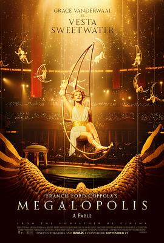

8.8
大都会
Megalopolis
2024
美国
评分 8.8
导演:
弗朗西斯·福特·科波拉
演员:
亚当·德赖弗 / 吉安卡罗·埃斯波西托 / 娜塔莉·伊曼纽尔 / 奥布瑞·普拉扎 / 希亚·拉博夫 / 达斯汀·霍夫曼 / 乔恩·沃伊特
类型:
剧情,科幻
剧情简介
在一个名为“新罗马” (New Rome) 的未来都市里，建筑师赛萨·卡蒂利纳 (Cesar Catilina) 凭借研发出革命性建筑材料「梅加隆」，获得诺贝尔奖，并提出一项宏伟城市愿景——打造理想社会 “大都会” (Megalopolis)。城中地标在他手中慢慢破土，玻璃塔楼拔地而起、钢铁水道在夜色中流转。然而，新罗马的市长弗兰克林·西塞罗 (Franklyn Cicero) 代表保守集团，他在破败、贫富分化的城市中坚持现实主义：赌场、税收、维持权力结构。他和卡蒂利纳站在对立面，一场美学与权力的较量在灰色天际线上拉开帷幕。赛萨的妻子失踪、酗酒、愧疚像阴影一样伴他左右，他带着城市的重建野心和个人的破碎伤口，一步步向光明迈进。但在权力的暗角，正义与利益交织。镜头穿梭于古典柱廊、霓虹废墟、停摆时钟——「暂停时间」的能力象征着赛萨对控制与变革的渴望。影片以现代纽约为蓝本，却通过古罗马征伐、参议院阴谋、建筑师叛逆的隐喻探讨文明的衰败与再造。卡蒂利纳不只是盖楼者，更像在刻画人类信念的鹰隼。而西塞罗则代表现实世界的不妥协：在他看来，乌托邦或许是一场游戏，而大多数人只能活在瓦砾和税收之间。当都市的支柱轰然坍塌、宣传橱窗闪烁着旧帝国的影像、民众的呐喊穿透玻璃窗，卡蒂利纳问：“如果你不能看到更好的未来，那就去建立它。”这语句回荡于废墟与钢材之间。